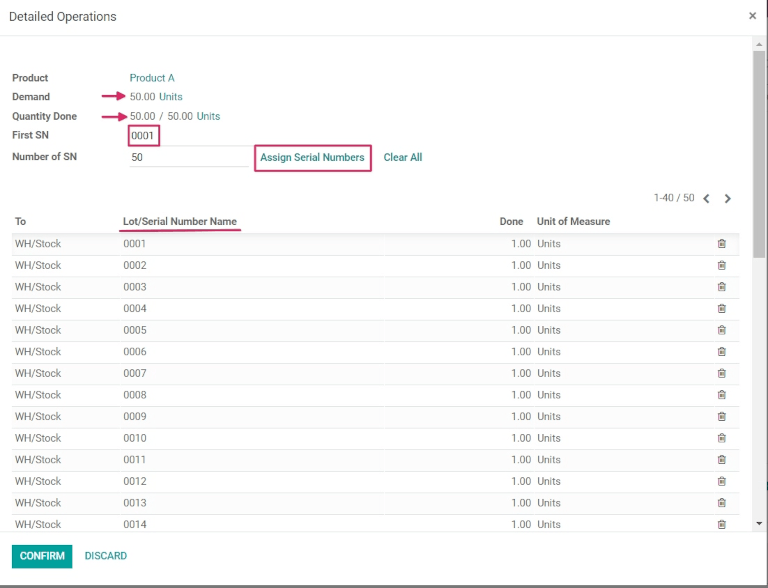
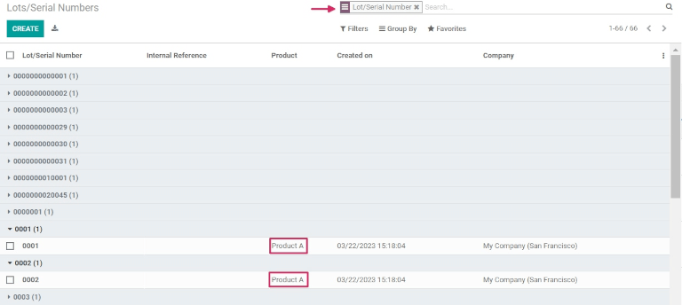

Use serial numbers to track products
Serial numbers are one of the two ways to identify and track products in Odoo. A serial number is a unique identifier assigned incrementally (or sequentially) to an item or product, used to distinguish it from other items and products.
Serial numbers can consist of many different types of characters: they can be strictly numerical, they can contain letters and other typographical symbols, or they can be a mix of all of the above.
The goal of assigning serial numbers to individual products is to make sure that every items history is identifiable when it travels through the supply chain. This can be especially useful for manufacturers that provide after-sales services to products that they sell and deliver.
See also
Enable lots & serial numbers
To track products using serial numbers, the Lots & Serial Numbers feature must be enabled. To enable this, go to , scroll down to the Traceability section, and click the box next to Lots & Serial Numbers. Remember to click the Save button to save changes.

Configure serial number tracking on products
Once the Lots & Serial Numbers setting has been activated, individual products can now be tracked using serial numbers. To configure this, go to , and choose a desired product to track.
Once on the product form, click Edit, and click the Inventory tab.
Once on the product form, click Edit, navigate to the Inventory tab, and scroll to the Traceability section. Then, select the By Unique Serial Number option, and click Save to save the changes. Existing or new serial numbers can now be selected and assigned to newly-received or manufactured batches of this product.
Warning
If a product doesnt have a serial number assigned to it, a user error pop-up window will appear. The error message states that the product(s) in stock have no lot/serial number. However, a lot/serial number can be assigned to the product by making an inventory adjustment.
Create new serial numbers for products already in stock
New serial numbers can be created for products already in stock with no assigned serial number. To do this, go to , and click Create. Doing so reveals a blank lots/serial numbers form. On this form, a new Lot/Serial Number is generated automatically.
Tip
While Odoo automatically generates a new lot/serial number to follow the most recent number, it can be edited and changed to any desired number, by clicking the line under the Lot/Serial Number field, and changing the generated number.
Once the Lot/Serial Number is generated, click the blank field next to Product to reveal a drop-down menu. From this menu, select the product to which this new number will be assigned.
This form also provides the option to adjust the Quantity, to assign a unique Internal Reference number (for traceability purposes), and to assign this specific lot/serial number configuration to a specific website in the Website field (if working in a multi-website environment).
A detailed description of this specific lot/serial number can also be added in the Description tab below.
When all desired configurations are complete, click the Save button to save all changes.

After a new serial number has been created, assigned to the desired product, and saved, navigate back to the product form, by going to , and selecting the product that this newly-created serial number was just assigned to.
On that products detail form, click the Lot/Serial Numbers smart button to view the new serial number.
Manage serial numbers for shipping and receiving
Serial numbers can be assigned for both incoming and outgoing goods. For incoming goods, serial numbers are assigned directly on the purchase order form. For outgoing goods, serial numbers are assigned directly on the sales order form.
Assign serial numbers to newly received products
Assigning serial numbers to incoming goods can be done on the receipt, by clicking the Detailed Operations smart button or by clicking the (bulleted list) icon in the product line.
See also
Warning
Clicking Validate before assigning a serial number to received quantities will cause a User Error pop-up to appear. The pop-up requires entry of a lot or serial number for the ordered products. The RFQ cannot be validated without a serial number being assigned.

There are multiple ways to do this: manually assigning serial numbers, automatically assigning serial numbers, and copy/pasting serial numbers from a spreadsheet.
Assign serial numbers automatically
If a large quantity of products need individual serial numbers assigned to them, Odoo can automatically generate and assign serial numbers to each of the individual products.
To accomplish this, start with the First SN field in the Detailed Operations pop-up window, and type the first serial number in the desired order to be assigned.
Then, in the Number of SN field, type the total number of items that need newly-generated unique serial numbers assigned to them.
Finally, click Assign Serial Numbers, and a list will populate with new serial numbers matching the ordered quantity of products.
Copy/paste serial numbers from a spreadsheet
To copy and paste serial numbers from an existing spreadsheet, first populate a spreadsheet with all of the serial numbers received from the supplier (or manually chosen upon receipt). Then, copy and paste them in the Lot/Serial Number Name column. Odoo will automatically create the necessary number of lines based on the amount of numbers pasted in the column.
From here, the To locations and Done quantities can be manually entered in each of the serial number lines.

Tip
For purchase orders that include large quantities of products to receive, the best method of serial number assignment is to automatically assign serial numbers using the Assign Serial Numbers button located on the PO. This prevents any serial numbers from being reused or duplicated, and improves traceability reporting.
Once all product quantities have been assigned a serial number, click the Confirm button to close the pop-up. Then, click Validate.
A Traceability smart button appears upon validating the receipt. Click the Traceability smart button to see the updated Traceability Report, which includes: a Reference document, the Product being traced, the Lot/Serial #, and more.
Once all product quantities have been assigned a serial number, click Confirm to close the popup, and click Validate. A Traceability smart button will appear upon validating the receipt. Click the Traceability smart button to see the updated Traceability Report, which includes: a Reference document, the Product being traced, the Lot/Serial #, and more.
Manage serial numbers on delivery orders
Assigning serial numbers to outgoing goods can be done directly from the sales order (SO).
To create an SO, navigate to the app, and click the Create button. Doing so reveals a new, blank quotation form. On this blank quotation form, fill out the necessary information, by adding a Customer, and adding products to the Product lines (in the Order Lines tab), by clicking Add a product.
Then, choose the desired quantity to sell by changing the number in the Quantity column.
Once the quotation has been filled out, click the Confirm button to confirm the quotation. When the quotation is confirmed, the quotation becomes an SO, and a Delivery smart button appears.
Click the Delivery smart button to view the warehouse receipt form for that specific SO.
From here, click the Additional Options menu, represented by a hamburger icon (four
horizontal lines, located to the right of the Unit of Measure column in the
Operations tab). Clicking that icon reveals a Detailed Operations pop-up.
In the pop-up, a Lot/Serial Number will be chosen by default, with each product of the total Reserved quantity listed with their unique serial numbers (most likely listed in sequential order).
To manually change a products serial number, click the drop-down menu under Lot/Serial Number, and choose (or type) the desired serial number. Then, mark the Done quantities, and click Confirm to close the pop-up.
Finally, click the Validate button to deliver the products.

Upon validating the delivery order, a Traceability smart button appears. Click the Traceability smart button to see the updated Traceability Report, which includes: a Reference document, the Product being traced, the Date, and the Lot/Serial # assigned.
The Traceability Report can also include a Reference receipt from the previous purchase order (PO), if any of the product quantities shared a serial number assigned during receipt of that specific PO.
Manage serial numbers for different operations types
By default in Odoo, the creation of new serial numbers is only allowed upon receiving products from a purchase order. Existing serial numbers cannot be used. For sales orders, the opposite is true: new serial numbers cannot be created on the delivery order, only existing serial numbers can be used.
To change the ability to use new (or existing) serial numbers on any operation type, go to , and select the desired Operation Type.
For the Receipts operation type, found on the Operations Types page, the Use Existing Lots/Serial Numbers option can be enabled, by selecting Receipts from the Operations Types page, clicking Edit, and then clicking the checkbox beside the Use Existing Lots/Serial Numbers option (in the Traceability section). Lastly, click the Save button to save the changes.
For the Delivery Orders operation type, located on the Operations Types page, the Create New Lots/Serial Numbers option can be enabled, by selecting Delivery Orders from the Operations Types page, clicking Edit, and clicking the checkbox beside the Create New Lots/Serial Numbers option (in the Traceability section). Be sure to click Save to save changes.

Serial number traceability
Manufacturers and companies can refer to the traceability reports to see the entire lifecycle of a product: where it came from (and when), where it was stored, and who it went to.
To see the full traceability of a product, or group by serial numbers, go to . Doing so reveals the Lots/Serial Numbers dashboard.
From here, products with serial numbers assigned to them will be listed by default, and can be expanded to show what serial numbers have been specifically assigned to them.
To group by serial numbers (or lots), first remove any default filters from the search bar in the upper-right corner. Then, click Group By, and select Add Custom Group, which reveals a mini drop-down menu. From this mini drop-down menu, select Lot/Serial Number, and click Apply.
Doing so reveals all existing serial numbers and lots, and can be expanded to show all quantities of products with that assigned number. For unique serial numbers that are not reused, there should be just one product per serial number.
Tip
For additional information regarding an individual serial number (or lot number), click the line item for the serial number to reveal that specific serial numbers Serial Number form. From this form, click the Location and Traceability smart buttons to see all stock on-hand using that serial number, and any operations made using that serial number.
See also